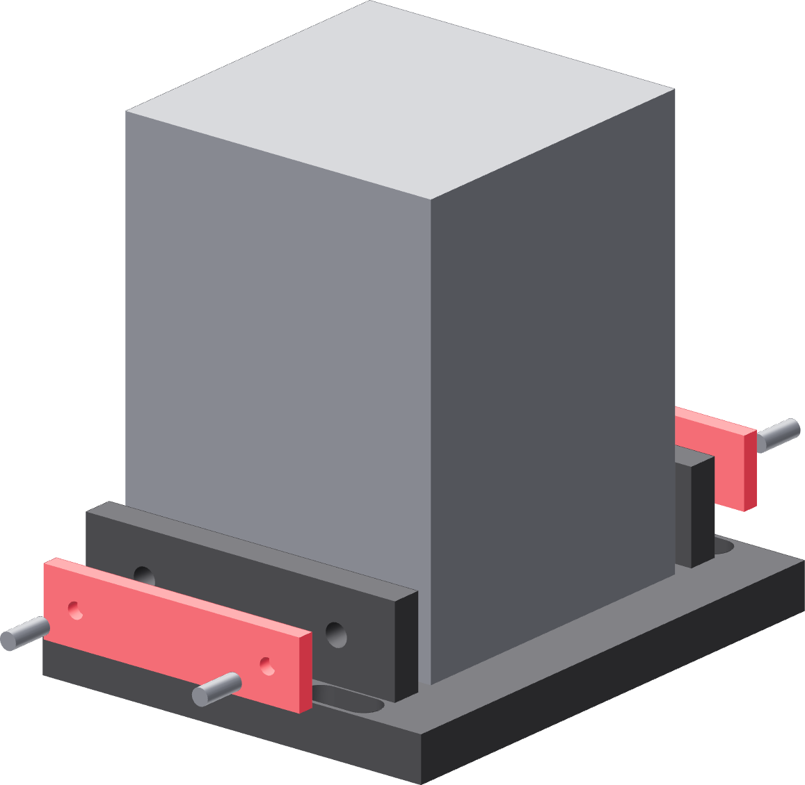

The two clamp pads
They stop the motor rocking. They do not hold the belt tension — the pilot ring in the skin does that.

- Slide one pad down each side of the motor frame, between the frame and the carriage's side wall.
- Start all four M3 × 8 screws inward through the walls' inserts, into the pads' screw-tip sockets.
- Advance them evenly, a turn at a time, alternating sides and ends.
- Stop as soon as the motor cannot rock. Try to twist the motor in the carriage: no movement, and no bowed side wall.
Even, and light
These four screws land in brass inserts in a 3 mm printed wall. Over-tightening one side pushes the motor off the pilot it is registered on, which is the one thing this joint must not do.
Gate — the assembly is one piece
Pick the carriage up by the motor. Nothing shifts, nothing rattles, and the pulley still spins free of the pilot. The carriage and motor now go onto the tower together.